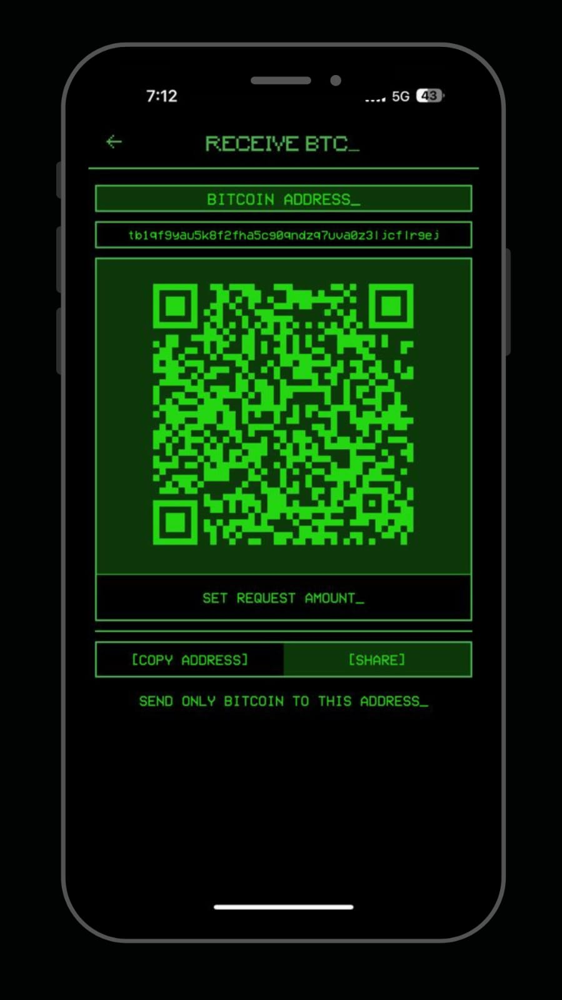
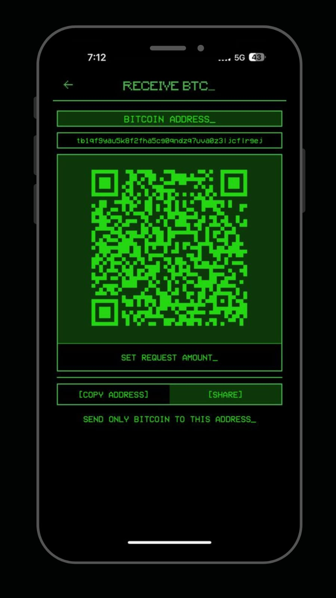

1Bitcoin Wallet
Take control of your Bitcoin assets with 1Bitcoin Wallet, a retro-styled HD wallet built with Dart and Flutter. Designed for managing Bitcoin transactions and assets securely, our wallet offers a visually appealing and intuitive user experience. With 1Bitcoin Wallet, you have the flexibility to manage multiple wallets within a single application. Whether you need separate wallets for personal and business use or want to organize your funds in different accounts, our wallet allows you to create and manage multiple wallets effortlessly. Enjoy the convenience and versatility of having multiple wallets at your fingertips, all within one stylish and functional HD wallet.
 

FAQ
Q: What is this HD wallet designed for?
A: This retro-styled HD wallet is designed for managing Bitcoin transactions and assets securely.
Q: Who developed this HD wallet?
A: This HD wallet is a project created by a group of passionate Bitcoin enthusiasts.
Q: How does this wallet handle user data?
A: We prioritize user privacy and security, and therefore, no user data is stored.
Q: Is this wallet custodial or non-custodial?
A: Our wallet follows a non-custodial approach, giving users complete control over their Bitcoin assets.
Q: What technology does this wallet use for address management?
A: This wallet utilizes hierarchical deterministic (HD) wallet technology for seamless generation and management of Bitcoin addresses.
Q: What can users expect from the user interface?
A: The wallet offers a visually appealing retro user interface, providing a delightful experience for Flutter enthusiasts who wish to send, receive, and track their Bitcoin transactions easily.
Q: Is this an open-source project?
A: No, this wallet is not an open-source project. Ensuring the security and integrity of the codebase is crucial for a wallet application. Publicly exposing the code can increase the risk of potential vulnerabilities and attacks. For instance, the Electrum open-source project experienced a hack in the past when someone accepted a malicious merge request, resulting in user loss of funds. Therefore, we have chosen to maintain the code privately to prioritize the safety of our users' assets.